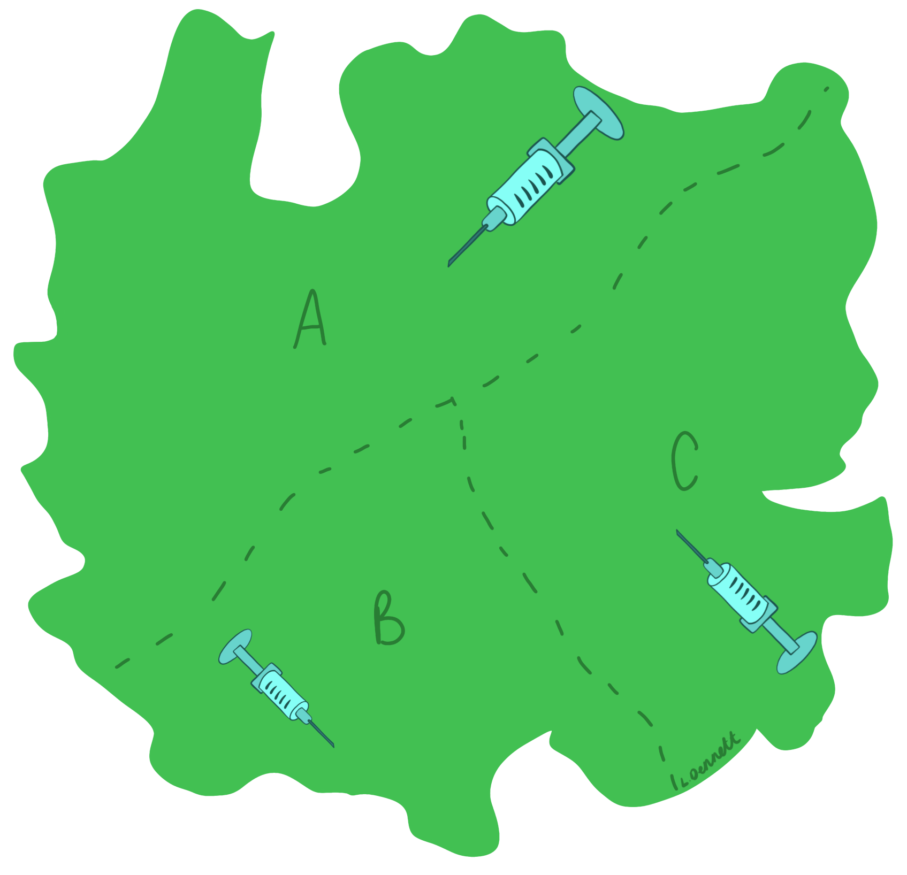
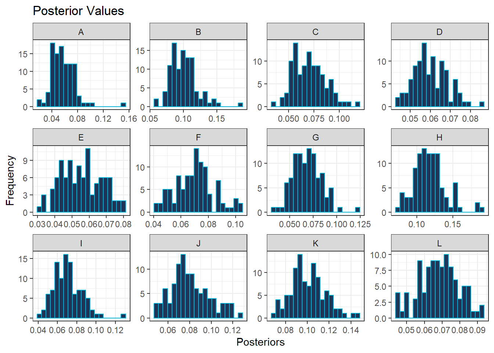
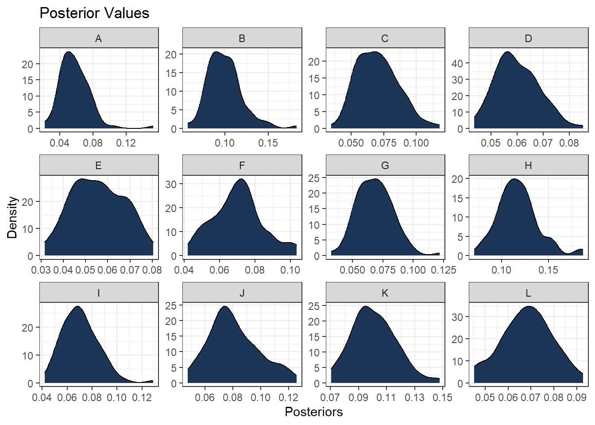

6 Bayesian Statistical Inference
This module covers the basics to more in-depth Bayesian statistical inference, including Bayes’ rule (also called Bayes’ theorem), likelihoods, the prior distribution and the posterior distribution.
6.1 Introduction
In the previous modules, the focus has been on the frequentist (or classical) approach, wherein all the values of the unknown parameter \(\theta\) in the parameter space \(\Theta\) are treated as if they are equally important and whilst the true value of \(\theta\) is unknown, it is considered to be constant. In this paradigm, the only information on \(\theta\) available comes from the data \(X_1, \cdots, X_n\).
The alternative approach that will now be the focus is Bayesian inference where it is assumed that there is prior knowledge available through use of subject probability statements. In this approach, it is assumed that \(\theta\) is a random variable and that there is some knowledge or information about \(\theta\) (for example, some values of \(\theta\) given in the parameter space \(\Theta\) might be more likely to be the true value of \(\theta\)) prior to observing the data \(D_n = {X_1, \cdots, X_n}\). The information about \(\theta\) that is contained in the data is then combined with the prior knowledge about \(\theta\), where the combined information is then the current total information about \(\theta\).
The three main components to Bayesian inference are then as follows.
- The prior distribution, \(p(\theta)\), expresses any existing beliefs about the parameter \(\theta\) before any information on the observed data is available. The prior distribution indicates the probability that each value in the parameter space \(\Theta\) is the true value of \(\theta\).
- The joint probability density, \(p(\textbf{x}|\theta) = p(D_n|\theta)\), is chosen which represents the conditional density of X conditioned on the parameter \(\theta\).
- The normalising constant (or proportionality constant), also known as the evidence, is then given as \[p(D_n)=\int_{\theta \in \Theta}p(\theta)p(D_n|\theta)d\theta \] for a given observed dataset \(D_n = \{X_1, \cdots, X_n\}\).
These components are then used to update the existing beliefs and calculate the posterior distribution \(p(\theta|D_n)\), where the posterior distribution is the conditional distribution of \(\theta\) given the observed data.
It is important to distinguish between the probability of events and the probability distribution or density function for a random variable. In this manual, this difference is distinguished with notation where \(P(.)\) is used to denote the probability of an event and \(p(.)\) is used to denote the probability distribution or density function.
6.2 Bayes’ theorem
Bayes’ theorem (also known as Bayes’ rule) is a mathematical formula that describes the likelihood of an event occurring based on prior knowledge of a previous outcome in similar circumstances.
The most basic form of Bayes’ theorem is for events A and B. Let \(A\) be an event and let \(B_1, B_2, \cdots, B_k\) be a set of mutually exclusive and exhaustive events (for clarification on mutually exclusive and exhaustive events, see Module 5). Then for \(i= 1, \cdots, k\), Bayes’ theorem is given as follows.
\[P(B_i|A) = \frac{P(B_i \cap A)}{P(A)} = \frac{P(B_i)P(A|B_i)}{P(A)}.\] where \(P(A) = \sum_{j=1}^kP(B_j)P(A|B_j)\) is the law of total probability (seen in Module 5).
This theorem can also be thought of as updating the probability of \(B_i\) occurring using the information about another event (\(A\)) that has already occurred.
Example: Following on from the last example given in Module 5, where it was assumed that there are 3 regions in a country, regions A, B and C, with area proportions 50%, 20% and 30% respectively. Also, in the year 20X5, respectively, 68%, 83% and 74% of the population will be vaccinated. This information is given in a table below.
| Region | Area Proportion | Percentage Vaccinated |
|---|---|---|
| A | 50% | 68% |
| B | 20% | 83% |
| C | 30% | 74% |

Bayes’ theorem can be used to work out the probability that someone is from region A given that they are vaccinated. In Module 5, using the law of total probability, it was found that the probability of someone being vaccinated was \(P(Vaccinated)=0.728\), use this value in the formula for Bayes’ theorem.
\[P(A|Vaccinated) = \frac{P(A)P(Vaccinated|A)}{P(Vaccinated)} = \frac{0.5 \times 0.68}{0.728} = 0.467\]
Therefore, the probability of someone who is vaccinated being from region A is 46.7%.
Exercise: Following on from the example above, what is the probability that someone who is vaccinated is from region C?
Note: For another example of Bayes’ theorem, see Spatial and Spatio-temporal Bayesian Models with R-INLA, page 57.
6.2.1 Bayes’ theorem for random variables
When it is assumed that \(\theta\) is a random variable, Bayes’ theorem can be adjusted to allow for the computation of the posterior distribution.
Consider the model parameters \(\theta\) and a given dataset \(D_n = \{X_1, \cdots, X_n\}\), where \(\theta\) is random and \(D_n\) is fixed. The posterior distribution can then be written as follows.
\[p(\theta| D_n) = \frac{p(\theta)p(D_n|\theta)}{p(D_n)}, \] where the proportionality constant is given as
\[ p(D_n) = \begin{cases} \sum_{\theta \in \Theta}p(\theta)p(D_n|\theta) & \text{ if } \theta \text{ is discrete,}\\ \int_{\theta \in \Theta}p(\theta)p(D_n|\theta)d\theta & \text{ if } \theta \text{ is continuous}. \end{cases} \]
In Bayes’ theorem, \(p(D_n)\) does not depend on \(\theta\), only \(X\) given that it is a proportionality constant, and so is often written as
\[p(\theta| D_n) \propto p(\theta)p(D_n|\theta),\] therefore,
\[\text{posterior} \propto \text{prior}\times \text{likelihood},\] where \(\propto\) means proportional to.
More information on likelihoods, prior and posterior probabilities is given in the next section.
6.3 The likelihood function
The likelihood function is introduced in Module 4 with likelihood ratio testing for model selection. However, this section will go into more detail of what the likelihood function actually is and how it is related to the data.
The likelihood function is a function of the parameters statistical model and given by the joint probability mass function (PMF) of discrete observed data or the joint probability density function (PDF) of continuous data. It is important to note that the likelihood function is different from a PMF or PDF, and is instead characterised by the joint distribution of the observed variables. The likelihood function of \(\theta\) is defined as \(L(\theta) = L(\theta|x) = p(\textbf{x}|\theta)\), evaluated at \(x\) and considered a function of \(\theta\). It is also an important component to both frequentist (for example the LRT for model selection) and Bayesian approaches.
The likelihood function is calculated by finding the joint distribution of the observed variables, found through finding the product of the PMF/PDF as follows. \[L(\theta) = \prod_{i=1}^n p(x_i;\theta)= p(x_1;\theta) \times p(x_2;\theta) \times \cdots \times p(x_n;\theta),\] where \(p(x;\theta)\) is the PMF if each \(X_i\) has discrete distribution and \(p(x;\theta)\) is the PDF if each \(X_i\) has continuous distribution. Given that the observations \(x_1,...,x_n\) are known since they are observed, the likelihood function can be described as a function of the unknown \(\theta\).
It is common to need to maximise the likelihood function, for example, to find the maximum likelihood estimate (the estimated value of the parameter of interest that is most likely to be the true value), however, it can be challenging to maximise a product. Therefore, the log-likelihood is often used, since it is typically easier to maximise a sum than a product. The log-likelihood is given as follows.
\[\log L(\theta) = \ell (\theta) = \sum_{i=1}^n \log p(x_i;\theta). \]
The log-likelihood of a model in R can be found through using the logLik() function with the model of interest as an argument. This is demonstrated in Module 4 for use in the likelihood ratio test.
6.3.1 Different types and structures
The likelihood function varies dependent on the data type and structure, as it depends on the distribution of the data itself.
To choose which likelihood function to use, it is important to look at the data itself and check for the data type and assumptions, using statistical tests or plots such as box plots and histograms for model assumption checking. For example, starting by looking at whether the data is discrete or continuous. If the data is discrete, look at the properties of the data. Are there many outcomes or only two outcomes? Are there repeated trials or only one trial conducted? If the data is continuous, it is important to look at whether the data is strictly positive or whether there are negative values.
The main data types are given below, with examples for possible distributions given for each data type to help identify which likelihood function to use and when.
6.3.1.1 Count data
For count data, the most common distributions are binomial, Poisson, negative-binomial and geometric. Given that count data is discrete, the probability mass function of each of the distributions is used in the construction of the likelihood function. An important note for count data is that the counts are always non-negative, \(X=\{0,1,2,\cdots\}\).
The binomial distribution is used in the case where there are only two possible outcomes and the data is collected over a series of repeated trials. In this distribution, the two outcomes are labelled as either a success or a failure, where the focus is on the number of successes in \(n\) trials. An example of when this distribution is used is when the data contains information on a series 100 births, there are two possible outcomes, male or female. The associated probability mass function is given as \[X \sim binomial(n, p), \text{ } p(x;n,p) = {}^nC_x p^x(1-p)^{n-x}.\] For more information on the binomial distribution, see Investopedia.
The Poisson distribution is used to identify how likely a given count of times an event is to occur within/over a specified period of time. The corresponding probability mass function is given as follows.
\[ X \sim Poisson(\theta),\text { } p(x;\theta) = \frac{\theta^x \exp(-\theta)}{x!}.\]
For more information on the Poisson distribution, see Investopedia.
An important assumption of the Poisson distribution is that the mean is equal to the variance. If this assumption cannot be met, often the negative-binomial distribution is used as an alternative to the Poisson distribution. It has an additional (dispersion) parameter, which allows for more flexibility than the Poisson distribution. The focus of the negative-binomial distribution is on the number of failures before the \(r\)th success, where the associated probability mass function is given as follows.
\[X \sim negbin(r,p), \text{ } p(x;r,p) = \frac{\Gamma(x+r)}{x!\Gamma(r)}p^r(1-p)^{x}\] For more information on the negative-binomial distribution, see Wolfram.
The geometric distribution is a special case of the negative-binomial distribution where the focus is on the number of failures before the first success, with the corresponding probability mass function given as follows.
\[ X \sim geometric(p),\text { } p(x;p) = p(1-p)^{x-1}.\] For more information on the geometric distribution, see Britannica.
6.3.1.2 Binary data
The most common distribution for binary data is the Bernoulli distribution. It is similar to the binomial distribution in that there are only two possible outcomes, however, instead of repeated trials, only one trial is conducted. For a Bernoulli trial, outcomes are either labelled as \(k=0\) indicating a failure or \(k=1\) indicating a success. The probability mass function of the Bernoulli distribution is given as follows.
For more information on the Bernoulli distribution, see Wolfram.
6.3.1.3 Proportional data
For proportions, the beta-binomial distributions is the most commonly used distribution type. In this discrete distribution, the probability \(p\) for a binomial distribution is chosen from a beta distribution, leading to the number of successes being a beta-binomial random variable. The corresponding probability mass function is given as follows.
\[X \sim beta-binomial(n, \alpha, \beta), \text{ } {}^nC_x \frac{B(x+\alpha, n-x+\beta)}{B(\alpha, \beta)},\] where \(\alpha\) and \(\beta\) are shape parameters, \(n\) is the number of trials and \(B\) is the Beta function given as \[ \begin{aligned} B(\alpha, \beta) &= \frac{\Gamma(\alpha)\Gamma(\beta)}{\Gamma(\alpha+\beta)} \\ &= \frac{(\alpha-1)!(\beta-1)!}{(\alpha+\beta-1)!}, \end{aligned} \]
For more information on the beta-binomial distribution see Buffalo.
6.3.1.4 Continuous data
Unlike with the discrete distributions where the probability of an exact outcome can be computed, for a continuous distribution, the focus is on computing the probability for a range of outcomes. The most common distributions for continuous data are the normal, log-normal, gamma and log-logistic distributions.
The normal distribution relies on symmetry around the mean, with its ‘bell curve’ shape when plotted well known. This distribution is used when there is a high frequency of data points near the mean with few data points further away from the mean. It is important to note that for the normal distribution, the data can be negative, so is not suitable for data that is strictly non-negative. To test the relevant assumptions associated with the normal distribution, plots such as histograms can be used. This is covered in Module 4. The probability density function for the normal distribution is given as follows.
\[X \sim normal(\mu, \sigma^2), \text{ } p(x;\mu, \sigma)=\frac{1}{\sqrt{2\pi\sigma^2}}\exp\left(-\frac{(x-\mu)^2}{2\sigma^2}\right).\] For more information on the normal distribution see Investopedia.
As mentioned in Module 4, if the assumptions are not met, the data can be transformed, for example using the logarithm function. If the logarithm of the random variable is normally distributed, then the log-normal distribution may be used. In this case, if X is log-normally distributed then \(Y=\log(X)\). The corresponding probability density function is given as
\[X \sim lognormal(\mu, \sigma^2), \text{ } p(x;\mu, \sigma)=\frac{1}{x\sqrt{2\pi\sigma^2}}\exp\left(-\frac{(\log(x)-\mu)^2}{2\sigma^2}\right).\] For more information on the log-normal distribution see Investopedia.
Information on alternative continuous distributions is given here Knime.
6.4 Prior distribution
As mentioned in the introduction, the prior distribution \(p(\theta)\), is a probability distribution that expresses beliefs about the parameter \(\theta\) that exist before, or prior to, conducting the experiment.
There are different types of prior distributions, and the choice of which type is important. There are a few main things to consider when choosing the prior distribution.
Firstly, as with choosing the likelihood function, the type of distribution should be considered as the prior distribution chosen needs to be representative of the parameters. There is often an instinctive choice for the prior distribution given the type of distribution. Some examples are given below.
- If the parameter of the model for the underlying system is continuous and symmetric, then the prior distribution chosen should be able to vary between either \(-\infty\) and \(\infty\) or \(0\) and \(\infty\).
- If the parameter of the model for the underlying system is continuous and positive, then the prior distribution chosen should be able to vary only between \(0\) and \(\infty\).
- If the parameter of the model for the underlying system is a proportion, then the prior distribution chosen should be able to vary between \(0\) and \(1\).
Secondly, the hyperparameters should be considered as they can make the prior distribution either more or less informative, where hyperparameters are the parameters of the prior distribution (this terminology is used to help distinguish between the parameters of the model for the underlying system and the parameters for the prior distribution).
Lastly, you should always check the sensitivity and robustness of the posterior distribution to different choices of priors.
6.4.1 Conjugate priors
In some cases, the posterior distribution can be solved through using a closed-form solution, meaning that there is not a need for more complex approximation methods. In most of these cases, the posterior density belongs to the same (parametric) family as the prior distribution. If this is the case, then the prior distribution, \(p(\theta)\), is called a conjugate prior of \(\theta\) under the likelihood \(p(D_n|\theta)\). Some examples of conjugate prior distributions are given below.
| Likelihood | Conjugate Prior |
|---|---|
| Binomial | Beta |
| Poisson | Gamma |
| Normal | Normal |
| Exponential | Gamma |
It is important to note that the conjugate models have limited flexibility, for example, conjugacy can be broken when a GLM is specified, or not all of the likelihoods available have an associated conjugate prior. As a result of this, these models are not frequently used in practice.
To demonstrate what a conjugate prior means, the Poisson-gamma model will be used. The Poisson distribution can only have non-negative integer values. Since the parameter of a Poisson distribution can take any positive real number, the prior distribution chosen should be able to vary between \(0\) and \(\infty\). In this case, since there is no upper bound, although a uniform distribution can be chosen such that it is non-negative, an upper bound must be set, for example, \(X \sim Uniform(0, 1000)\). Therefore, the uniform distribution would not be an appropriate choice for prior distribution. Instead, a gamma distribution is a good choice, since the ‘tail’ of the distribution goes to infinity and the ‘peak’ of the distribution is close to zero, which are similar characteristics to the Poisson distribution. This is demonstrated in the plots below.

For more information see StatLect.
6.4.2 Flat, improper and non-informative priors
One of the ways of selecting the prior is to use subjectivism. This method follows the belief that the prior should reflect the subjective opinion of \(\theta\) (subjective beliefs about \(\theta\) before the data is collected). However, this approach is not only not possible in many situations, it is also not appropriate in many cases, especially since it is often a goal to keep the inference objective. This is typically when a non-informative prior is used instead.
In situations where there isn’t a preference for any given value in \(\Theta\), meaning that the values in \(\Theta\) are equally likely to be the true value of \(\theta\), there is a lack of information about \(\theta\). A prior distribution that reflects this is called a non-informative prior.
One type of non-informative prior is a flat prior, where \(p(\theta) \propto k\), where \(k\) is a constant, for example, \(p(\theta)=1\). Given the relationship between the prior, likelihood and the posterior distribution, when the prior is constant, the posterior becomes some fraction of the likelihood. This means that the posterior is then only affected by the likelihood function.
A probability density function should integrate to 1, \(\int_{-\infty}^\infty p(\theta)d\theta=1\) and a probability mass function should sum to 1 \(\sum_{-\infty}^{\infty} p(\theta)=1\). However, when the prior distribution is constant, this basic property of the PDF or PMF is violated. For example, if the data is continuous and \(p(\theta)=k\) for all \(-\infty < \theta < \infty\), then the integral \[\int_{-\infty}^\infty p(\theta)d\theta = k \int_{-\infty}^\infty d\theta\] does not exist, no matter how small \(k\) is since \(k>0\).
When this is the case, it is called an improper prior, and the distribution can only be assumed if the resulting posterior distribution is proper, \(\int_{-\infty}^\infty p(\theta|D_n)d\theta=< \infty\).
If \(p(\theta)=k\) for values of \(\theta\) where the likelihood function has appreciable value (a value that is not insignificant) and \(p(\theta)=0\) otherwise, then the prior distribution is called a locally uniform prior.
One of the most commonly used non-informative priors is that of Jeffreys’ prior, given by the square root of the Fisher information matrix as follows. \[p(\theta) \propto \sqrt{I(\theta))},\] where \[I(\theta) = -E\left[\frac{\partial^2}{\partial \theta^2}\log(p(\theta|D_n))\right].\]
For example, the Jeffreys’ prior for \(\theta\) when a binomial distribution is assumed is as follows. \[p(\theta)\propto {\theta(1-\theta)}^{-1/2}.\]
For more information on non-informative priors and prior selection, see Box and Tiao, Section 1.3.
6.4.3 Informative prior
In the instance that there is prior information available, typically from existing results from prior experiments focused on the same area or topic, an informative prior should be used to incorporate this information into the model. For example, when looking at the success rates of a new drug in testing, if previous experiments focused on the success rate of a similar drug have occurred, then this existing information can be used to construct an informative prior distribution. For a more in depth example, an example of this kind is demonstrated in the book Spatial and Spatio-temporal Bayesian Models with R-INLA on page 69.
6.5 Overview of posterior inference
As previously mentioned, in Bayesian statistics, the likelihood and prior distribution are combined to get the posterior distribution. Unlike with classical statistics, where simply the mean and standard deviation can be used to make inference on the parameter of interest, in order to make inference from the posterior distribution, samples need to be generated from the posterior distribution.
6.5.1 Markov Chain Monte Carlo approach
To generate the samples required, Markov Chain Monte Carlo methods (discussed in more detail in Module 8) can be utilised, where the type of MCMC approach used depends on what the posterior distribution itself looks like. In the closed form case where the posterior distribution looks like a recognisable probability distribution, such as the normal or Poisson distributions, the MCMC approach known as Gibbs sampler can be used. However, a closed form solution is not always available. If this is the case, then other Metropolis-Hastings algorithms are required, such as Random Walk and Independence Sampler.
Once the samples have been generated from the posterior distribution, it needs to be checked whether the samples are drawn from the target (or stationary) distribution, which is the distribution that is desired when the likelihood and the prior distribution are multiplied together. To check this, when MCMC approaches are used, a trace plot can be created. Trace plots are useful for assessing whether a chain is well-mixed or not. If the chain is well-mixed, after the burn-in period, the trace plot won’t have any flat sections, which would indicate that the chain remains stationary for too long, and the plot won’t have too many consecutive steps in the same direction. Overall, you do not want the trace plot to show any obvious correlation.
To demonstrate what the plot should look like, the function plot.ts() can be used to plot a time series plot with randomly sampled data.
Below, 1000 numbers are randomly sampled from a normal distribution with mean 10 and standard deviation 10. The corresponding time series plot shows oscillation around the central value (mean) of 10, with good mixing.
#set seed for reproducibility
set.seed(123)
#randomly sample numbers
post1 <- rnorm(1000, 10, 10)
#plot the sampled numbers
plot.ts(post1)
To contrast this well-mixed plot, the data sampled below comes from the same normal distribution but only has 100 values, leading to a plot that is quite sparse. It is a lot harder to identify a central value and as a result, a larger sample size is required.
#set seed for reproducibility
set.seed(123)
#randomly sample numbers
post2 <- rnorm(100, 10, 10)
#plot the sampled numbers
plot.ts(post2)
In contrast with the samples taken from a normal distribution, the below (1000) values are sampled from a gamma distribution. Whilst the sample size is large, there is poor convergence, given that the central value changes after the first 500 observations. If this chain was obtained from an MCMC approach, the chain would be poorly mixed.
#set seed for reproducibility
set.seed(123)
#randomly sample numbers
post3 <- c(rgamma(500, 10, 2), rgamma(500, 10, 1))
#plot the sampled numbers
plot.ts(post3)
Another diagnostic measure of the MCMC approach is the use of R-hat values. Ideally, you want all of the chains to be sampling from the same underlying distribution which can be identified by the R-hat values being close to 1, where a value close to 1 indicates convergence. However, if the R-hat values are notably larger than 1.1, there is indication that convergence has not been achieved and there may be an issue.
The R-hat value can be found using the Rhat() function from the rstan package. This is demonstrated in the example below where the resulting value is close to 1.
#set seed for reproducibility
set.seed(123)
#sample numbers
post4 <- runif(100, 1, 1.2)
#compute R-hat statistic
Rhat(post4)## [1] 0.9997899R-hat values can also be plotted with the mcmc_rhat() function (or as a histogram with the mcmc_rhat_hist() function) from the bayesplot package. These plots are colour-coded by default, clearly visualising the proportion of values within different ranges (\(\leq1.05\), \(1.05<\hat{r}\leq 1.1\) and \(>1.1\)).

## `stat_bin()` using `bins = 30`. Pick better value with `binwidth`.
6.5.2 Integrated Nested Laplace Approximation approach
Integrated Nested Laplace Approximation (INLA) provides a faster, more efficient approach to using MCMC for posterior inference through using approximation. It approximates the posterior distribution with the posterior marginal distribution through using an evolution approach that is based on Laplace approximation. It does not involve sampling and is deterministic, accurate and fast. The corresponding R package, INLA can be used for modelling. For more information on the INLA package, see R-INLA Project.
To perform modelling with INLA in R as an alternative approach to the methods discussed in Module 4, the function inla() can be used with the following arguments.
formula: a formula object that specifies the linear predictor.data: a data frame with the data. If you wish to predict the response variable for some observations, you need to specify the response variable of these observations as NA.family: a string or vector of strings that indicate the likelihood family such as Gaussian, Poisson or binomial. The default family for this argument is Gaussian. A list of alternatives can be seen by running the codenames(inla.models()$likelihood)and details for individual families can be seen with the codeinla.doc("familyname").control.compute: a list with the specification of several computing variables such asdic, which is a Boolean variable indicating whether the Deviance information criterion (DIC, explored further in Module 9) of the model should be computed.control.predictor: a list with the specification of several predictor variables such as a link which is the link function of the model, and compute which is a Boolean variable that indicates whether the marginal densities for the linear predictor should be computed.
It is important to note that the formula should be specified first, outside the function, and specified in the form formula <- response ∼ x1 + x2 + ... xM.
#install the INLA package from the code given on the website
install.packages("INLA",repos=c(getOption("repos"),INLA="https://inla.r-inla-download.org/R/stable"), dep=TRUE)#template for using inla() function
formula <- response ~ x1 + x2 + ... xM #the nominal form of the model
res <- inla(formula,
data = data.frame(data), #your data frame
family = "poisson", #the probability distribution of the response
control.predictor = list(compute = TRUE),
control.compute = list(dic = TRUE) + )
summary(res) #produces summaries of the posterior parameter estimates To demonstrate the posterior estimation, (standardised) population data from Cameroon is used. Information on how to standardise the dataset first is given in Module 8, however, for now the focus is on the modelling. Firstly, the dataset needs to be imported into the R environment.
#input the data
Data_CMR <- read.csv(paste0(data_path, "Data_CMR_std.csv"))
#load the variable names file
var_names <- read.csv(paste0(data_path, "var_names.csv")) y ~ x2 + x16 + x20 + x24 + x31 + x36 + x40
As an example, if the model \(\log(\lambda) = intercept + \beta_1*x_2 + \beta_2*x_{16} + \beta_3*x_{20} + \beta_4*x_{24} + \beta_5*x_{36} + \beta_6x_{40}\) is the chosen model, the inla() function can be used to fit this model as follows.
#nominal form of the model
density <- (Data_CMR$Total_Pop/Data_CMR$Total_Building_Count)
form_pop1a <- density ~ x2 + x16 + x20 + x24 + x31 + x36 + x40
mod1 <- inla(form_pop1a,
data = data.frame(Data_CMR),
family = "gamma", #the probability distribution of the
#response variable
control.predictor = list(compute = TRUE),
control.compute = list(dic = TRUE, waic = TRUE, cpo = TRUE,
config = TRUE) #necessary to to draw
#samples from the posterior
)
#summary of the INLA model
summary(mod1)## Time used:
## Pre = 0.909, Running = 1.35, Post = 0.185, Total = 2.45
## Fixed effects:
## mean sd 0.025quant 0.5quant 0.975quant mode kld
## (Intercept) 1.479 0.020 1.440 1.479 1.518 1.479 0
## x2 -0.197 0.024 -0.243 -0.197 -0.150 -0.197 0
## x16 -0.204 0.020 -0.244 -0.204 -0.165 -0.204 0
## x20 0.299 0.026 0.248 0.299 0.351 0.299 0
## x24 0.119 0.020 0.081 0.119 0.158 0.119 0
## x31 -0.003 0.023 -0.048 -0.003 0.041 -0.003 0
## x36 -0.359 0.024 -0.405 -0.359 -0.312 -0.359 0
## x40 -0.067 0.027 -0.119 -0.067 -0.015 -0.067 0
##
## Model hyperparameters:
## mean sd 0.025quant 0.5quant 0.975quant mode
## Precision-parameter for the Gamma observations 1.58 0.051 1.48 1.58 1.68 1.58
##
## Deviance Information Criterion (DIC) ...............: 7275.40
## Deviance Information Criterion (DIC, saturated) ....: 1340.67
## Effective number of parameters .....................: -209.98
##
## Watanabe-Akaike information criterion (WAIC) ...: 8268.99
## Effective number of parameters .................: 397.68
##
## Marginal log-Likelihood: -3908.32
## CPO, PIT is computed
## Posterior summaries for the linear predictor and the fitted values are computed
## (Posterior marginals needs also 'control.compute=list(return.marginals.predictor=TRUE)')Once the chosen model has been fitted, the desired information can be extracted. Firstly, to obtain the fixed effects estimates, the argument summary.fixed can be extracted from the model as follows.
## mean sd 0.025quant 0.5quant 0.975quant mode kld
## (Intercept) 1.4788 0.0200 1.4396 1.4788 1.5180 1.4788 0
## x2 -0.1968 0.0237 -0.2433 -0.1968 -0.1503 -0.1968 0
## x16 -0.2042 0.0202 -0.2437 -0.2042 -0.1646 -0.2042 0
## x20 0.2994 0.0261 0.2481 0.2994 0.3507 0.2994 0
## x24 0.1192 0.0197 0.0805 0.1192 0.1579 0.1192 0
## x31 -0.0031 0.0227 -0.0476 -0.0031 0.0414 -0.0031 0
## x36 -0.3588 0.0236 -0.4051 -0.3588 -0.3124 -0.3588 0
## x40 -0.0669 0.0267 -0.1192 -0.0669 -0.0146 -0.0669 0To obtain the predicted values, the argument summary.fitted.values can be extracted from the model. There are different predicted values available however within this argument, so for completeness, it is important to extract the predicted means with the mean argument, as well as the upper and lower bounds of the 95% credible intervals with the 0.025quant and 0.975quant arguments respectively. It is important to exponentiate the results given that the logarithm transformed population was used in the model.
#obtain the predicted values
pred1 <- mod1$summary.fitted.values$mean #predicted means
pred1L <- mod1$summary.fitted.values$`0.025quant` #lower bounds of 95%
#credible intervals
pred1U <- mod1$summary.fitted.values$`0.975quant` #upper bounds of 95%
#credible intervalsArguably the most important part of this estimation is the posterior estimates, which can be obtained through extracting summary.linear.predictor$mean from the model, and exponentiating the results given that the logarithm transformed population was used in the model.
The predicted values can then be compared to the posterior estimates, where it can be seen that they are almost identical.
## pred1 post_est
## [1,] 1.781561 1.765761
## [2,] 3.192312 3.176338
## [3,] 7.618386 7.603349
## [4,] 6.947705 6.915962
## [5,] 4.095951 4.093035
## [6,] 3.868976 3.8666586.6 Elicitation of priors
There is a lot of flexibility when choosing a prior, but there are some things that should be kept in mind that should not be done.
Firstly, the prior should not be chosen based on the observed data. Instead, the prior should be chosen to reflect the uncertainty of the parameters prior to observing the data. It is classed as “data snooping” or “p-hacking” when the prior is chosen based on the observed data in order to elicit a desired result.
Additionally, if a prior assigns 0 probability to the values of the parameter, this prior should not be chosen. It is important to consider the range of possible values of the parameter, as if the prior density is 0 over the range of values of the parameter, no amount of data can turn that probability into a positive posterior probability. Therefore, always check that the prior density is non-zero over the range of parameter values.
Lastly, do not focus solely on finding the “perfect” prior. The prior is an assumption of the model and as with many aspects of statistics, assumptions are rarely perfectly satisfied. The focus instead should be to find a prior which results in a suitable model for which the assumptions are reasonably satisfied. It should also be kept in mind that if you feel that a singular prior is not suitable enough, more than one model can be considered, where each model has a different prior, and the average of the chosen models used for computing the results.
6.6.1 Priors INLA
In R-INLA, the function inla.models()$prior returns a list with the names of each of the available priors. If this code is used in the names() function as names(inla.models()$prior), then the names of the priors available will be returned. If you wish to see documentation regarding a specific prior, then the function inla.doc("priorname") can be used.
By default, the intercept of the model is assigned a Gaussian prior with mean and precision equal to 0. The rest of the fixed effects are assigned Gaussian priors with mean equal to 0 and precision equal to 0.001. These values can be seen with the code inla.set.control.fixed.default()[c("mean.intercept", "prec.intercept", "mean", "prec")]. The values of these priors can be changed in the control.fixed argument of the function inla() by assigning a list with the mean and precision of the Gaussian distributions. Specifically, the list contains mean.intercept and prec.intercept which represent the prior mean and precision for the intercept respectively, as well as mean and prec which represent the prior mean and precision for all fixed effects except the intercept respectively. The below code is a template of how to change these values in the inla() function.
#template for inla with prior fixed
prior.fixed <- list(mean.intercept = <>, prec.intercept = <>,
mean = <>, prec = <>)
res <- inla(formula,
data = d,
control.fixed = prior.fixed)Alternatively, to specify a prior on the hyperparameters of the latent effects, a list that defines the prior can be passed through the hyper parameter within the f() function, where the list contains the following arguments.
prior: the name of the given prior distributionparam: the values of the parameters for the given prior distributioninitial: (optional) the initial value(s) of the hyperparameters. If noinitialargument is given, the initial value(s) will be set to their default value(s).fixed: (optional) a logical argument defining whether theinitialvalue(s) are kept fixed or allowed to change. If nofixedargument is given, it will be set toFALSEby default.
In the example below, a gamma prior is defined with parameter values of 0.01 and 0.01. Here, the arguments of initial and fixed are also included, but are set to their default values.
#example of gamma prior
prec.prior1 <- list(prec = list(prior = "loggamma",
param = c(0.01, 0.01)),
initial = 4,
fixed = FALSE)
formula1 <- y ~ 1 + f(set_type, model = "iid", hyper = prec.prior1)loggamma is just one example of the different priors that can be implemented in INLA. For a comprehensive list of the different priors, run the code names(inla.models()$prior). If you wish to have more detailed information on a specific prior from this list, the code inla.doc("prior") can be used, where "prior" is the prior you wish to have more information on, for example, use inla.doc("loggamma") for more information on the gamma prior.
6.6.1.1 Penalised Complexity priors
Penalised Complexity priors or PC priors were designed to suit additive models that are defined by different components, and get their name from the fact that the priors penalise any departure from the base model. To follow parsimony (preferring the simplest model that still fits the data well), the base model is always preferred for PC priors, as long as there is no evidence provided against this base model. As a result of this, they improve the predictive performance and can reduce over-fitting. For more information on PC priors, with a more in-depth explanation, see Bayesian inference with INLA.
In the example code seen below, a penalised complexity prior is defined through specifying prior = "pc.prec", with parameters 1 and 0.01. To change the prior, the values of the parameters in the param argument simply need to be changed.
#example of PC prior
prec.prior2 <- list(prec = list(prior = "pc.prec",
param = c(1, 0.01)))
formula2 <- y ~ f(set_type, model = "iid", hyper = prec.prior2)To demonstrate this methodology, an example from Geospatial Health Data is used, where data from 12 hospitals on surgical mortality rates is modelled in order to assess the performance of each of the hospitals. Here, the focus is on the code, however, to see more information on the modelling process itself, see Chapter 4 in the book itself. In this dataset, n refers to the total number of operations undertook within a one-year period for each hospital, r refers to the number of deaths within a 30-day period of surgery for each hospital and hospital refers to each of the hospitals in the data.
#create surgery dataset
Surg <- data.frame(n = c(47, 148, 119, 810, 211, 196, 148, 215, 207, 97, 256,
360),
r = c(0, 18, 8, 46, 8, 13, 9, 31, 14, 8, 29, 24),
hospital = c("A", "B", "C", "D", "E", "F", "G", "H", "I",
"J", "K", "L"))Below, a Penalised Complexity prior is set by selecting prior = "pc.prec" and specifying that the probability of the standard deviation being greater than 1 is equal to 0.01 by setting the parameters to param = c(1, 0.01).
#set PC prior for surgery dataset
prior.prec <- list(prec = list(prior = "pc.prec",
param = c(1, 0.01)))Once the prior is set, it can be used in the model formula, input into the hyper argument, before calling the inla() function and specifying the given formula. In the inla() function, to compute the posterior marginals of the parameters, control.predictor = list(compute = TRUE) is included as an argument. Similarly, for model comparison purposes, to compute the DIC, the argument control.compute = list(dic = TRUE) can be added. Finally, to compute the marginals, the logical statement return.marginals.predictor = TRUE is included in the list for the control.compute argument as control.compute = list(dic = TRUE, return.marginals.predictor = TRUE).
#create INLA model for PC prior
formula <- r ~ f(hospital, model = "iid", hyper = prior.prec)
surg.mod <- inla(formula,
data = Surg,
family = "binomial",
Ntrials = n,
control.predictor = list(compute = TRUE),
control.compute = list(dic = TRUE, return.marginals.predictor = TRUE,
config = TRUE)
)As with standard modelling in R, the summary() function can be used to obtain the results from an INLA model as follows.
## Time used:
## Pre = 0.386, Running = 0.311, Post = 0.163, Total = 0.859
## Fixed effects:
## mean sd 0.025quant 0.5quant 0.975quant mode kld
## (Intercept) -2.547 0.141 -2.841 -2.542 -2.28 -2.543 0
##
## Random effects:
## Name Model
## hospital IID model
##
## Model hyperparameters:
## mean sd 0.025quant 0.5quant 0.975quant mode
## Precision for hospital 11.41 11.85 2.36 8.26 38.41 5.34
##
## Deviance Information Criterion (DIC) ...............: 74.47
## Deviance Information Criterion (DIC, saturated) ....: 24.70
## Effective number of parameters .....................: 8.08
##
## Marginal log-Likelihood: -41.16
## is computed
## Posterior summaries for the linear predictor and the fitted values are computed
## (Posterior marginals needs also 'control.compute=list(return.marginals.predictor=TRUE)')6.7 Sampling and evaluating the posterior density
Once the model has been fitted, the predicted values can be obtained and compared to the observed values with a scatter plot. To obtain the predicted values, the argument summary.fitted.values can be extracted from the model.
The observed values can be added to this results variable as follows.
#add observed values
results <- results %>%
mutate(observed = Surg$r/Surg$n) %>% #proportion
rename(predicted = mean) %>% #predicted
as_tibble()Then the scatter plot comparing the observed and predicted values can be created. For a basic scatter plot with a smooth curve, the function scatter.smooth() from the stats package can be utilised, inputting the observed and predicted values as arguments.
 Alternatively, the
Alternatively, the geom_point() function within the ggplot() function from the ggplot2 package can be utilised as follows (see Module 2 for more help with scatter plots).
#scatter plot using ggplot
ggplot(data = results, aes(x = observed, y = predicted))+
geom_point() +
geom_smooth(method = "lm", se = FALSE, color = "red")+ #geom_smooth is used
#to draw a line
theme_bw()+
labs(title = "Scatter Plot",
x = "Observed",
y = "Predicted")## `geom_smooth()` using formula = 'y ~ x'
To plot histograms and density plots using the posterior results, the first step is to sample from the posterior using the inla.posterior.sample() function.
#sample from posterior in model
samples <- inla.posterior.sample(n = 100, result = surg.mod,
num.threads = "1:1")To work with the data, the variable containing the sampled data needs to be transposed.
#transpose samples and select the first 12 columns
samples <- t(sapply(samples, function(x) x$latent))The first 12 columns of the transposed sampled data correspond to the predicted values for each of the hospitals, and can therefore be subset for a new variable.
The predicted values need to be transformed to be in the correct scale. This is done with the inverse logit function for back transformation, and to make it simpler, a function is first created then applied to the predicted values.
#inverse logit function for back transformation
inverse_logit <- function(aa) {
out = exp(aa)/(1 + exp(aa))
return(out)
}
#apply function
predicted_values <- inverse_logit(predicted_values)Given that the values for each hospital are of interest, to make the results easier to interpret, the columns of the predicted values can be named to correspond with each of the hospital labels.
#add hospitals labels to the posteriors
hospitals <- c("A", "B", "C", "D", "E", "F", "G", "H", "I", "J", "K", "L")
#label the columns
colnames(predicted_values) <- c(hospitals) Finally, the predicted values variable needs to be converted from a matrix to a data frame so that the values can be plotted as usual.
To visualise the posterior values for each hospital, histograms and density plots are utilised. To demonstrate these methods, only hospital A is plotted at first.
For the histogram, ggplot() is used, specifying the data frame for the predicted values and specifying which hospital (A) using aes(x=A), with the additional function geom_hisogram() as follows.
#histogram of posterior values for hospital A
ggplot(data = predicted_values_df , aes(x = A)) +
geom_histogram(bins = 20, color = "#00b4d8", alpha = 1, fill = "#1d3557") +
theme_bw() +
labs(title = "Posterior Predicted values for A",
x = "Posteriors",
y = "Frequency")
The same approach is used for the density plot, but using the additional function geom_density() as follows.
#density plot of posterior values for hospital A
ggplot(data = predicted_values_df , aes(x = A)) +
geom_density(alpha = 1, fill = "#1d3557") +
theme_bw() +
labs(title = "Posterior predicted Values for A",
x = "Posteriors",
y = "Density")
Exercise: Create a histogram of the posterior values for hospital D.
Exercise: Create a density plot of the posterior values for hospital G.
Given that there are 12 hospitals, it can be beneficial for comparison purposes to plot the histograms or density plots for each hospitals side-by-side. To do this within ggplot(), a new variable needs to be specified which contains the the predicted values with the corresponding hospital label in a long table.
#long table for predicted values and hospital labels
predicted_long <- predicted_values_df %>%
pivot_longer(cols = everything(),
names_to = "Hospitals",
values_to = "Posteriors")Then, the function facet_wrap() can be used within the ggplot() function to plot either the histogram or the density plot for each hospital at the same time on the same panel.
#histogram for posterior values for each hospital
ggplot(data = predicted_long, aes(x = Posteriors)) +
geom_histogram(bins = 20, color = "#00b4d8", alpha = 1, fill = "#1d3557") +
theme_bw() +
labs(title = "Posterior Values",
x = "Posteriors",
y = "Frequency") +
facet_wrap( ~ Hospitals, scales = "free")
#density plot for posterior values for each hospital
ggplot(data = predicted_long , aes(x = Posteriors)) +
geom_density(alpha = 1, fill = "#1d3557") +
theme_bw() +
labs(title = "Posterior Values",
x = "Posteriors",
y = "Density") +
facet_wrap( ~ Hospitals, scales = "free")
6.8 Useful resources
- Overall: Spatial and Spatio-temporal Bayesian Models with R-INLA
- Binomial distribution: Binomial Distribution: Definition, Formula, Analysis and Example
- Poisson distribution: Poisson Distribution: Formula and Meaning in Finance
- Negative-binomial distribution: Negative Binomial Distribution
- Geometric distribution: Geometric Distribution
- Bernoulli distribution: Binomial Distribution
- Beta-binomial distribution: Probability Playground: The Beta-Binomial Distribution
- Normal distribution: Normal Distribution: What It Is, Uses, and Formula
- Log-normal distribution: Log-Normal Distribution: Definition, Uses, and How To Calculate
- Alternative continuous distributions: What are continuous probability distributions & their 8 common types?
- Conjugate prior: Conjugate prior
- Non-informative priors and prior selection: Bayesian Inference in Statistical Analysis
- INLA: R-INLA Project
- Penalised Complexity priors: Bayesian inference with INLA
- Penalised Complexity priors example: Geospatial Health Data: Modeling and Visualisation with R-INLA and Shiny